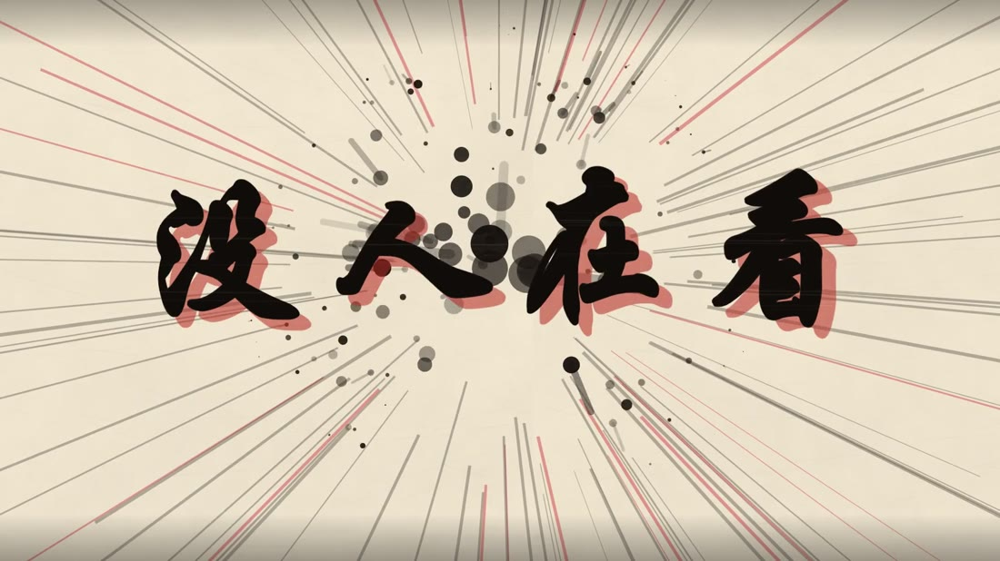
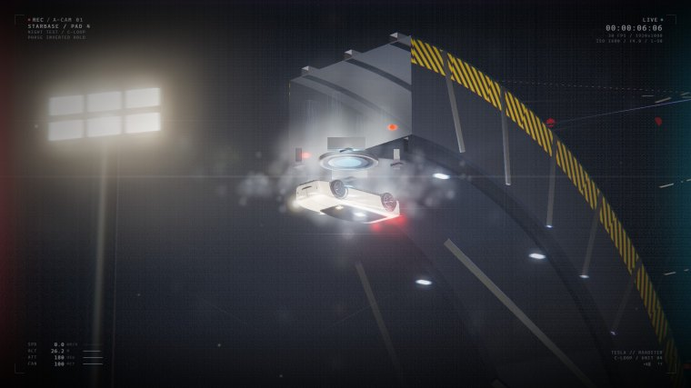

FILM-01影像 · 81 秒
FILM-01影像 · 81 秒
比较
81 秒 56 个镜头，把「别人都在赢」讲成一次情绪反转。所有切点落在 0.352 + k×1.0846 这条公式上，音乐整首原样播完，零素材库。
2431 帧56 镜头切点误差 ≤1 帧第二版重做
看这条片子
一页式 PDF
Four films written in code, one AIGC reel
这个厅放的片子有个共同点，没有一个镜头是拍的。前四部是代码逐帧算出来的，最后那条是 AI 生成的。放在一起是因为它们都在回答同一件事，节奏能不能被设计出来，而不是碰运气碰出来。
FILM-01 — 04 · 程序化影像 · 零素材库
FILM-01影像 · 81 秒
81 秒 56 个镜头，把「别人都在赢」讲成一次情绪反转。所有切点落在 0.352 + k×1.0846 这条公式上，音乐整首原样播完，零素材库。

FILM-02影像 · 52 秒52 秒水墨卡点。眼睛、镜子、灯三个意象讲完一个心理学概念，drop 处全屏反白、墨点炸开，画面全部 Canvas 2D 逐帧生成。

FILM-03影像 · 16 秒16 秒 480 帧确定性渲染，零外部素材。车在 C 形钢构坡道上倒挂悬停，冷气反推、180 度横滚。Three.js 搭场景、SVG 做光学层、WebCodecs 编码。
FILM-05 · 合集 · 12 条
 FILM-05合集 · 12 条
FILM-05合集 · 12 条
《中国龙》V3、《候》、《悟空》三条 AIGC 片子，加品牌社媒短视频与剪辑练习，一共十二条。抽卡、脸会飘这些坑都趟过，也想了怎么压住。